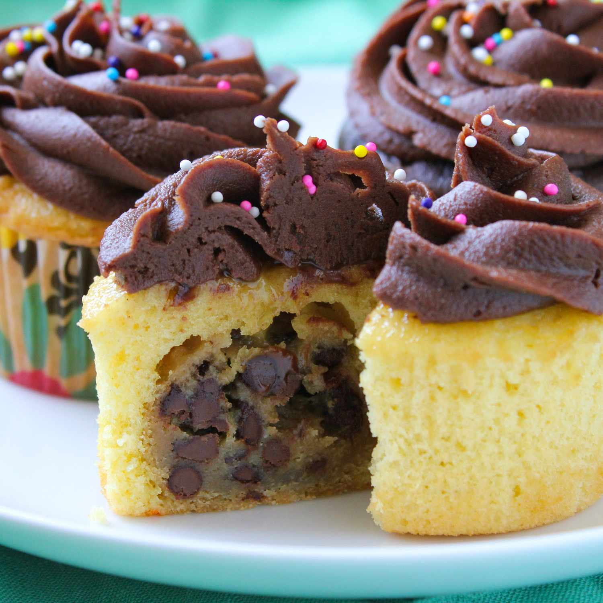

Cookie Dough Cupcakes Recipe

Description
Cupcakes are small, individually-sized cakes that are baked in muffin tins and often topped with frosting. They come in countless flavors and styles, making them a fun and versatile dessert for birthdays, parties, or everyday treats.
Their size makes them easy to serve and enjoy without utensils, and they can be decorated creatively with sprinkles, fruit, or themed toppers.
While vanilla and chocolate are classic cupcake flavors, bakers often experiment with fillings, such as jam or cream, and frostings like buttercream or cream cheese icing.
Cupcakes are beloved for their soft, moist texture and their ability to be customized to suit any occasion or personal taste.
Ingredients
- 1 ½ cups all-purpose flour
- 1 cup granulated sugar
- ½ cup unsalted butter (softened)
- 2 large eggs
- ½ cup milk
- 1 ½ teaspoons baking powder
- ½ teaspoon vanilla extract
- ¼ teaspoon salt
- Frosting (buttercream or your choice)
- Sprinkles or toppings (optional)
Steps
-
Preheat the oven to 350°F (175°C) and line a muffin tin with cupcake liners.
-
Cream the butter and sugar together in a mixing bowl until light and fluffy.
-
Add eggs one at a time beating well after each addition.
-
Mix in the vanilla extract.
-
In a separate bowl, combine the flour, baking powder, and salt.
-
Gradually add the dry ingredients to the wet mixture, alternating with milk. Mix until just combined.
-
Scoop the batter into the cupcake liners, filling each about 2/3 full.
-
Bake for 18–22 minutes, or until a toothpick inserted in the center comes out clean.
-
Cool completely on a wire rack before frosting.
-
Frost and decorate with your choice of icing and toppings.
Home